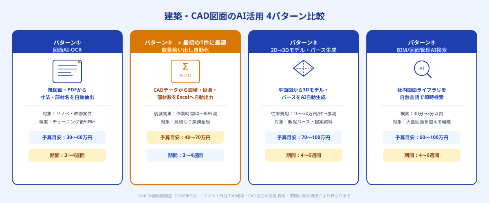
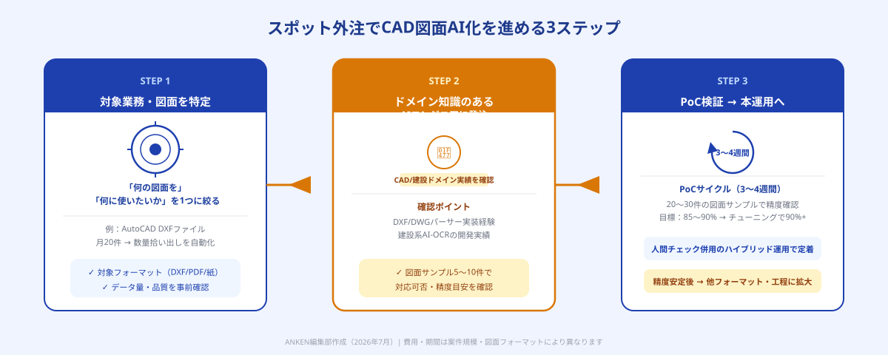

建築・CAD図面業務でAIが解決できる3つの課題
建設業・設計事務所は、日本のデジタル化が最も遅れている業種の一つです。2026年現在でも、紙図面のスキャン→手入力、CADデータからの手作業による数量計算、完成予想パースの外注など、「熟練担当者の経験と時間」に依存した業務が大量に残っています。
特に深刻な課題は以下の3点です。
課題①：数量拾い出しに膨大な時間がかかる
見積もり作成の前段階として行う「数量拾い出し（部材・面積・延長の集計）」は、CAD図面を読み込みながら手計算・手入力で行うのが一般的です。中規模の建築案件で1〜3日、大規模では1週間以上を要するケースも珍しくありません。しかも計算ミスが見積もりの誤りに直結するため、複数回のチェックが必要です。
課題②：紙図面・古いCADデータのデジタル化が追いつかない
改修・リノベーション案件では、過去の紙図面やDXFファイルが大量に存在します。これをBIMや最新CADシステムに取り込むためのデータ変換・入力作業が属人化しており、担当者の退職とともにノウハウが失われるリスクがあります。
課題③：パース・3Dモデル作成の外注コストと納期
建築パース（完成予想図）の作成は従来、外注に10〜30万円・納期1〜2週間かかるのが相場でした。AI技術を使った2D図面からの3D自動生成・AI画像生成と組み合わせた工程では、これを大幅に短縮・低コスト化できますが、自社で実装するためには専門知識が必要です。

建築・CAD図面のAI活用パターン4種
建築・設計分野でスポット外注を使って実現できるAI活用は、主に4つのパターンに分類されます。自社の課題に最も近いパターンを選んで発注するのが最初のステップです。
パターン①：図面AI-OCR（紙図面・PDFの自動テキスト化・寸法抽出）
スキャンした紙図面やPDF図面から、寸法値・部材名・仕様テキストを自動で読み取るシステムです。建築図面特有の記号・略語を学習させた専用AI-OCRを構築することで、一般的なOCRでは読み取れない設計記号にも対応できます。紙図面が大量に存在するリノベーション・改修案件で特に効果が高い活用パターンです。
パターン②：数量拾い出し自動化（面積・延長・部材数の自動集計）
CADデータ（DXF/DWGファイル）を入力すると、部屋ごとの床面積・壁延長・開口部数量などを自動集計するシステムです。Excel出力まで自動化することで、見積もり担当者が数量計算を手で行う時間を80〜90%削減した事例があります。今回の発注ナビ調査でも複数の同種案件が確認されており、実需が高い領域です。
パターン③：2D図面から3Dモデル・パースの自動生成
平面図・立面図のCADデータを読み込んで3Dモデルを自動生成し、外観パース・内観パースを出力するパイプラインの構築です。AIによる3D変換と画像生成AIの組み合わせにより、従来10〜30万円・1〜2週間かかっていたパース作成を、担当者が自社で即日生成できる環境を整えることができます。
パターン④：BIM/CAD図面の管理・検索システム（AI-RAG）
社内に蓄積された大量のCAD図面・仕様書をAI検索で一元管理するシステムです。「○○マンションの外壁仕様を見たい」「鉄筋コンクリート造の過去の断面詳細図を探したい」と自然言語で検索すると、該当図面を即座に表示します。大規模な設計事務所・ゼネコンで社内ナレッジの属人化を解消するのに有効です。
「すぐに工数削減の効果が出る」という観点ではパターン②（数量拾い出し自動化）が最初の1件として最適です。毎月の見積もり業務と直結しており、ROIが計測しやすく、3〜4週間・40〜70万円程度で実現できます。紙図面の量が多いならパターン①（図面AI-OCR）と組み合わせる形で発注するのも効果的です。
スポット外注でCAD図面AI化を進める3ステップ

STEP 1：対象業務と図面データを特定する
最初に「どの業務・どのデータを対象にするか」を一つに絞ります。「CAD図面全般をAI化したい」という依頼では、スコープが広すぎてエンジニアが提案を出せません。以下の2点を具体化することが発注成功の鍵です。
①対象業務（例：新築住宅の数量拾い出し / 過去の紙図面200枚のデジタル化 / 社内のCAD図面ライブラリへのAI検索機能追加）。②対象データの種類と量・フォーマット（例：AutoCAD DXF形式のファイルが月20件 / スキャンPDF図面が約300枚ある / A3紙図面が過去10年分倉庫に保管されている）。この情報があれば、エンジニアは「実現可能か・どのAI技術を使うか・期間と予算の見積もり」を提示できます。
STEP 2：CAD/建設ドメイン知識のあるAIエンジニアを選んで発注する
建築・CAD分野のAI活用は、「AIの技術力」だけでなく「建設・設計業務への理解」が重要です。スポット外注で依頼する際は、以下の経験・実績を確認します。
・CAD/BIMデータの処理経験（DXF/DWGパーサーの実装、点群データの処理など）。・AI-OCRの実装経験（特に非定型のドキュメント・図面への対応実績）。・建設業・製造業のシステム開発実績（建設系SaaS・BIMツール関連の開発など）。ポートフォリオや過去案件の概要から確認し、「建築CADのデータをどのように扱いますか？」という質問を投げかけると実力が分かります。ANKENではドメイン特化のキーワードでエンジニアを絞り込んでご紹介しています。
STEP 3：小さなPoC（試作）で検証してから本運用に展開する
まず「手持ちの図面データ20〜30件」を使ったPoC版を3〜4週間で作ることを推奨します。PoC版では「AIが正しく図面を読み取れるか」「数量計算の精度はどの程度か」を実際のデータで確認します。
目安精度として、汎用的なAI-OCRで建築図面の寸法抽出精度は70〜80%程度ですが、自社の図面フォーマットに特化したファインチューニングを行うと90〜95%以上に向上するケースが多く報告されています。PoCで精度と使い勝手を確認した後、本運用向けの完成版を同エンジニアに継続依頼する流れが最もリスクが低い進め方です。
活用事例3選
事例1：住宅設計事務所の数量拾い出し自動化（設計事務所・従業員12名）
注文住宅の見積もり業務で、CAD図面からの数量拾い出しに担当者1名が毎回1.5〜2日を費やしていました。DXFファイルを入力すると部屋ごとの床面積・壁延長・開口部数を自動集計してExcelに出力するツールをスポット外注で開発（予算50万円・4週間）。対応した設計事務所では拾い出し時間が2日→2時間に短縮され、月の見積もり対応件数が1.6倍に増加しました。
事例2：ゼネコンの紙図面デジタル化AI-OCR（建設会社・従業員80名）
過去20年分の紙図面・手書き設計書が倉庫に保管されており、改修案件の度に物理的に探す手間が発生していました。建設図面特有の略語・記号に対応した専用AI-OCRを開発し、スキャナで取り込んだ図面から寸法値・部材名・仕様テキストを自動抽出してデータベース化するシステムを構築（予算80万円・6週間）。過去図面の検索時間が「担当者が倉庫に行って探す（平均40分）」から「PC検索で3分以内」に短縮されました。
事例3：不動産デベロッパーのAIパース自動生成（デベロッパー・従業員30名）
分譲マンションの販促用パースの外注に1物件あたり15〜30万円・納期10〜14日かかっており、計画変更のたびに追加費用が発生していました。平面図・立面図のCADデータから3Dモデルを自動生成し、複数の外観パターンのパース画像を生成するパイプラインをスポット外注で構築（予算90万円・5週間）。初期コストは発生しましたが、2物件目以降はパース1件あたりの費用が1/10以下になり、12カ月で投資回収を達成しました。
PoC段階（1フォーマット・小規模データセット）：30〜70万円 / 3〜4週間。本運用版（複数フォーマット対応・精度チューニング済み）：80〜200万円 / 5〜8週間。機能追加・精度改善のスポット依頼：15〜40万円 / 1〜2週間。従来の専門ソフトウェアの年間ライセンス費用と比較すると、1〜2年での投資回収が現実的です。
スポット外注でよくある失敗と対策
失敗①：図面フォーマットの多様性を甘く見る
建設・設計業務では、CADソフトのバージョン・会社ごとの作図ルール・紙図面の品質（汚れ・折れ・手書き追記）が千差万別です。「うちのCADデータならAIで簡単に読める」と思っていたものが、実際に試すと読み取り精度が低いというケースがあります。対策は、発注前に実際の図面サンプル5〜10件をエンジニアに見せて「対応可能か・どの程度の精度が出るか」を確認してもらうことです。
失敗②：「完全自動化」を最初から求める
AI-OCRや数量拾い出しツールを「人間が一切確認しない完全自動化」として使おうとすると、ミスが見積もりエラーに直結するリスクが生じます。正しいアプローチは、「AIが計算した結果を人間が最終チェックする」ハイブリッド運用から始めることです。精度が安定してきた後に人間のチェックステップを縮小していく段階的な移行が現場定着のポイントです。
失敗③：BIMソフトとの連携を後から気にする
「まずExcel出力できればOK」として開発したツールが、後から「Revitに直接取り込みたい」という要件が出て追加開発が必要になるケースがあります。発注時点で「最終的にどのBIM/CADソフトと連携させたいか」を明確にしておくと、後からの改修コストを抑えられます。
ANKENでは、CAD/BIMデータ処理・AI-OCR・建設系システム開発の実績があるAIエンジニアをタスク単位でご紹介しています。「まず図面サンプルで試してみたい」「どのパターンが自社に合うか相談したい」という段階からご対応します。
👉 無料で相談する（CAD図面AI化をスポット外注で依頼する）「どんな図面データに対応できるか」「どのくらいの予算・期間か」から確認いただけます。
よくある質問
- Q. AutoCAD（DWG）以外の図面フォーマットにも対応できますか？
- A. 対応可能です。DXF・PDF・JWW（JW-CAD）・紙スキャンなど、多様なフォーマットに対応したAI-OCRや変換ツールの開発実績があるエンジニアをご紹介できます。発注前に図面サンプルを確認してもらうことで対応可否と精度の目安を確認できます。
- Q. 数量拾い出し自動化で、どの程度の精度が出ますか？
- A. PoC段階では85〜90%程度が目安です。自社の図面フォーマットに特化したチューニングを行うと90〜95%以上になるケースが多く報告されています。最終的には人間が確認するハイブリッド運用から始め、精度向上とともに確認ステップを縮小する進め方が現場定着の近道です。
- Q. 社内にCAD担当者はいますが、AIの知識はゼロです。依頼できますか？
- A. 依頼可能です。「このCADデータからこういう情報を自動で取り出したい」という業務視点での説明ができれば、技術的な知識がなくても発注できます。要件定義の整理から対応するエンジニアもANKENに登録しています。
まとめ
建築・CAD図面のAI活用は、設計事務所・建設会社にとって今最も投資対効果が高いDX領域の一つです。数量拾い出しの自動化・紙図面のデジタル化・AIパース生成のいずれも、スポット外注を使えばIT専任者なし・月額固定費ゼロから実現できます。
成功のポイントは3つです。①まず1フォーマット・1業務に絞って発注する、②CAD/建設ドメイン知識のあるエンジニアを選ぶ、③PoCで精度を確認してからハイブリッド運用で本格展開する。「完全自動化」を最初から目指すのではなく、「人間の作業を8割減らすツール」として位置づけることが、現場定着と確実なROI実現の鍵となります。